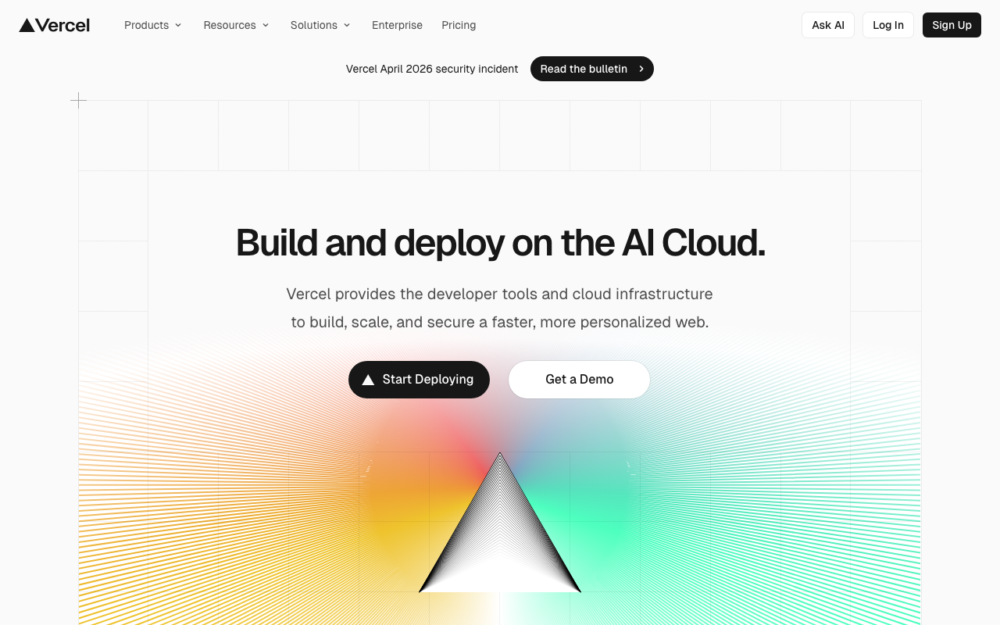

흑백 + 한 번의 무지개 스펙트럼
Vercel의 마케팅 홈은 "흑백 + 한 번의 무지개 스펙트럼"이라는 한 줄짜리 디자인 선언에 가깝다. 배경은 #FFFFFF, 본문은 #000000, CTA도 #000000 on #FFFFFF — UI 자체에는 채도가 없다. 그런데 페이지 중앙 히어로 아래에 유일하게 pastel spectrum gradient가 펼쳐지고, 그 위에 작은 삼각형 로고가 얹혀 이 사이트의 시각적 서명이 된다.
색상 전략은 철저하게 monochrome-first다. --ds-gray-100 ~ --ds-gray-1000 10단계 회색 램프가 UI 전체를 지배하고, HSLA 값(0, 0%, 95% → 0, 0%, 9%)은 모두 채도 0%다. 채도 있는 토큰(#FF0080, #FFF500, #7928CA, #50E3C2, #0070F3)은 존재하지만 일반 surface에 쓰지 않는다.
타이포그래피의 축은 Geist(Vercel 자체 산스) + Geist Mono다. body weight는 400, 그러나 실사용상 500/600이 압도적으로 많다. 계단은 14/16/20/24/32/40/48/56/64px로 상승, 히어로 H1만 clamp(24px, var, 72px)의 fluid. GeistPixelSquare/Grid/Circle/Triangle/Line 5종 픽셀 아이콘 폰트를 자체 배포한다.
레이아웃은 1200px page-width + 24px gap이 표준. --geist-space: 4px baseline × {1x,2x,3x,4x,6x,8x,10x,16x,24x,32x,48x,64x} scale. Radius는 6/12/9999px 3단. Shadow는 6단 계단 모두 #0000001a ~ 1f 형태의 균일한 4~6% 검정 오파시티만 사용 — 거의 flat.
인터랙션은 .15s duration이 압도적(37회) — 거의 모든 hover가 이 한 값으로 통일. easing은 대부분 ease-out 또는 생략. Vercel은 "빠르고 무뚝뚝한" UI를 선택했다.
Vercel — --ds-*
Vercel Geist DS 기반 디자인 토큰 리포트. 채도 없는 mono 팔레트 + 단 하나의 prism gradient hero art.

/* 1. 폰트 + weight */
body {
font-family: "Geist", -apple-system,
BlinkMacSystemFont, "Segoe UI", sans-serif;
font-weight: 400;
font-size: 16px;
line-height: 1.5;
}/* 2. 배경 + 텍스트 (monochrome) */
:root {
--bg: #FFFFFF;
--fg: #000000;
--border: hsl(0, 0%, 92%);
}
body {
background: var(--bg);
color: var(--fg);
}/* 3. CTA는 검정 */
:root { --brand: #000000; }
.cta {
background: var(--brand);
color: #FFFFFF;
border-radius: 6px;
padding: 0 16px;
height: 40px;
}#0070F3, #FF0080, #7928CA 등)을 쓰지 말 것. Vercel의 정체성은 "컬러가 없다"이다. 채도는 오직 히어로 gradient 아트와 블로그 카테고리 칩처럼 한 점에만 허용된다.
출처와 수집 기준
CSS 커스텀 프로퍼티 직접 파싱으로 추출. AI 추론 없음.
https://vercel.com--ds-* (core) + --geist-* (legacy)테크 스택
프레임워크, 디자인 시스템 구조, CSS 아키텍처.
--ds-* + legacy --geist-*)#FFFFFF) + .dark-theme class toggle#000000 (text/CTA) / #0070F3 (legacy Vercel Blue)타이포그래피
14/16/20/24/32/40/48/56/64px 계단 + fluid H1 clamp(24px, var, 72px). Body 400, nav/btn 500, heading 600-700.
Geist (OFL, 재배포 가능)Geist Mono (OFL)컬러
Monochrome-first — HSL 0% saturation gray ramp 10단 + black/white anchor. 채도는 legacy Geist accent(#0070F3 등)만 존재하지만 본문에 쓰지 않음.
Alias Layer
Dominant Colors (실제 DOM 빈도)
스페이싱
4px baseline × {1x,2x,3x,4x,6x,8x,10x,16x,24x,32x,48x,64x} scale. 이름 suffix = 배수, 값 = N * 4px.
라디우스 (모서리 반경)
3단 radius 시스템 — 6px 기본, 12px 카드, 9999px pill. 그 외 4/2/50% 마이너 사용.
섀도우
6단 계단 — 모두 #0000001a ~ 1f (4-12% 검정)로 통일. 거의 flat, 오직 계층 차이로만 깊이 표현.
모션
거의 모든 transition이 .15s 단일 값. Easing은 대부분 ease-out 또는 생략(linear).
레이아웃 패턴
1200px page-width + 24px gap + 600/960px content columns. Mobile-first, 600/768/960/1200 4단 breakpoint.
Grid System
- Content max-width: 1200px (--geist-page-width)
- With margin: 1248px
- Grid type: CSS Grid + Flexbox
- Gutter: 24px (--geist-space-gap)
- Typical cols: 600px prose · 960px hero · 1200px grid
Hero
- Layout: 1-column centered
- Background: solid #FFFFFF + 하단 prism gradient art
- H1: clamp(24px, var, 72px) / weight 700 / tracking -0.03em
- Max-width: 960px (텍스트)
- Signature: triangle SVG overlay on pastel prism
Section Rhythm
- Padding: 96px 24px
- Max-width: 1200px centered
- 섹션 간 시각적 구분: 때때로 alt-bg (#FAFAFA)
Card Patterns
- Background: #FFFFFF (light)
- Border: 1px solid rgba(0,0,0,0.08)
- Radius: 12px
- Padding: 24px
- Shadow: --shadow-small, hover → medium
Navigation
- Type: horizontal sticky
- Height: 64px (collapsed) / 100px (expanded)
- Background: var(--menu-bg) = #FFFFFF
- Border: 1px solid var(--ds-gray-400) 하단
Content Width
- Prose: 600-624px
- Container: 1200px
- Hero: 960px
- Docs sidebar: 280px
반응형
Mobile-first (min-width 95회 vs max-width 소수). 600/768/960/1200 4단 주 브레이크포인트.
컴포넌트
Button 3-5 variant + badge + card + nav + hero. data-geist-button attribute naming. 40px 기본 height slot.
<button data-geist-button class="button-module__QyrFCa__primary">Start Deploying</button><button data-geist-button class="button-module__QyrFCa__tertiary">Get a Demo</button><span class="geist-badge">New</span>Connect your Git repo
<article class="card">
<h3>Deploy instantly</h3>
<p>Connect your Git repo</p>
</article>라이팅 원칙
기술 자신감 + 친근 — 카피라이터가 아닌 엔지니어 화법.
CSS / Tailwind 내보내기
그대로 복사해 프로젝트에 붙여 넣을 수 있는 Drop-in 스니펫.
에이전트 가이드
AI 에이전트(Claude, GPT)가 이 디자인 시스템으로 구현할 때 참조하는 Quick reference.
Example Component Prompts
Vercel 스타일 히어로 섹션을 만들어줘.
- 배경: #FFFFFF solid
- Eyebrow pill: bg #FAFAFA color #171717 radius 9999px
- H1: Geist clamp(24px, 6vw, 72px) weight 700 tracking -0.03em color #000
- 서브: Geist 16px color #8F8F8F max-width 600px 중앙
- Primary CTA: bg #000000 color #FFF radius 6px height 40px
- Secondary CTA: outline 1px solid #EBEBEB color #000
- 하단 hero art: pastel prism gradient + 삼각형 SVG 로고Vercel 스타일 카드.
- bg #FFFFFF border 1px solid rgba(0,0,0,0.08) radius 12px padding 24px
- shadow 0 5px 10px #0000001F
- hover: 0 8px 30px #0000001F transition .15s
- 제목 Geist 20px weight 600 #171717
- 본문 14px color #8F8F8F line-height 1.5Vercel 스타일 배지 (pill).
- font Geist Mono 12px weight 500
- padding 2px 8px radius 9999px
- 기본 bg rgba(0,0,0,0.05) color #171717
- 강조 bg #0070F3 color #FFF (드물게만)Vercel 스타일 상단 nav.
- height 64px position sticky top 0
- bg #FFFFFF border-bottom 1px solid #EBEBEB
- 로고: 삼각형 + Geist 16px weight 600 wordmark
- 링크 Geist 14px weight 500 color #4D4D4D hover #171717
- CTA 페어: Log In(text) + Sign Up(primary button #000 bg)- 본문 UI는 monochrome 유지. 채도는 info chip, 차트, hero art에만.
- weight 400 body, 500 button/nav, 600 heading, 700 hero. 300 쓰지 말 것.
- 여백 조정 시: --geist-space = 4px 배수만 (4/8/12/16/24/32/48/64/96/128).
- 새 컴포넌트: radius는 6/12/9999 중 하나. shadow 6단 scale 유지.
- 다크 모드: .dark-theme class 토글로 자동 반전.
- 반응형: 600/768/960/1200 4단 mobile-first.
- transition .15s 단일 값 — 다른 duration 쓰지 말 것.
Do / Don't
실제 CSS에서 검증된 규칙만 수록.
DO
- ✅ 배경은 #FFFFFF(light) 또는 #000000(dark). 중간 회색 surface 쓰지 말 것.
- ✅ CTA primary는 #000000 배경 + #FFFFFF 텍스트 + radius 6px.
- ✅ 본문은 Geist 16px weight 400. 제목은 weight 600-700.
- ✅ 여백은 4px 배수 시스템 (--geist-space-Nx)으로만.
- ✅ Card shadow는 #0000001F 오파시티 계단으로만.
- ✅ transition은 .15s 단일 값 — 다른 duration 쓰지 말 것.
- ✅ 히어로 H1은 clamp(24px, Nvw, 72px) fluid 타이포그래피로.
- ✅ 큰 H1/H2/H3에는 negative letter-spacing (-0.01em ~ -0.03em) 적용.
DON'T
- ❌ 본문 UI에 채도 색(#0070F3, #FF0080, #7928CA)을 넓게 쓰지 말 것 — 대신 #000000/#FFFFFF + gray ramp.
- ❌ 배경을 중간 회색(#F5F5F7, #EEEEEE)으로 두지 말 것 — 대신 #FFFFFF 또는 #FAFAFA.
- ❌ 텍스트를 pure #000000으로 넓게 쓰지 말 것 — 본문은 #171717. #000은 버튼 bg/hero H1에만.
- ❌ body에 font-weight: 300 사용 금지 — Vercel은 400 기본이 맞다.
- ❌ radius 8px, 10px 같은 비표준 값 금지 — 6/12/9999 중 하나.
- ❌ transition duration .3s 이상 금지 — Vercel은 .15s 고정.
- ❌ 히어로 H1을 고정 px로 쓰지 말 것 — clamp fluid가 맞다.
- ❌ 회색 램프를 채도 있는 HSL로 만들지 말 것 — Vercel gray는 HSL(0, 0%, L%) 순수 neutral.